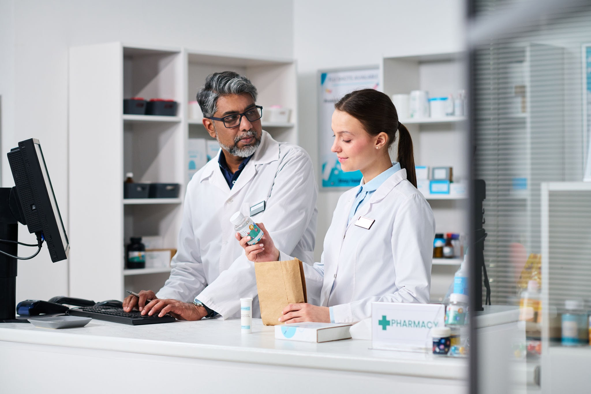

By Stephanie Enriquez

Pharmacists reviewing medication at the counter (via Getty Images).
The public perception of pharmacy work often focuses on tasks such as counting pills/labeling medication bottles. In practice, however, pharmacy teams dedicate a substantial portion of their time to less visible yet crucial responsibilities. These include reviewing possible drug interactions, managing insurance prior authorizations, communicating with prescribers, and identifying dosing errors before medications are dispensed to patients.
While robotics and automated dispensing cabinets have handled physical counting for years, AI is now entering the cognitive side of pharmacy. At UCSF Health, medication safety/pharmacy analytics teams piloted an AI tool called Defogger to scan safety reports/spot medication-error patterns proactively, helping teams fix dangerous workflows before a patient gets hurt (ASHP, 2026). Meanwhile, across retail/hospital pharmacies, AI tools are starting to draft prior-authorization letters/summarize dense patient charts so pharmacists aren’t buried in screens.
| What Tech & AI Handle | What the Pharmacist & Tech Handle |
|---|---|
|
|
Ask people working in pharmacy how they feel about AI, and the answer isn’t panic, it’s healthy skepticism. In the UCSF medication safety project, leaders summed up the mood clearly:
Pharmacists contributing to the Sermo professional community (2026) have highlighted the risks associated with relying uncritically on AI. General AI models may generate inaccurate drug information, overlook recent FDA recalls, and experience difficulties when managing patients with complex medication regimens. In the context of pharmacy, even minor mistakes can have serious clinical consequences. As a result, AI-generated summaries are best regarded as preliminary drafts that require careful human review before any clinical decisions are made.
A recent 2026 KFF poll indicates that one in three U.S. adults have used AI chatbots for health advice within the past year, frequently without consulting a healthcare professional afterward. For pharmacists, who are often the most easily accessible healthcare providers in many communities, this trend calls for increased efforts to verify the accuracy of information patients receive from chatbots, and to guide patients in distinguishing evidence-based pharmacological advice from potentially unreliable online sources.
Not every task in a pharmacy should be automated. Here is where the human-in-the-loop line stands today:
| Zone | Pharmacy Tasks |
|---|---|
| Hand to AI (Low risk, high busywork) |
Refill reminders, inventory forecasting, basic translation labels, drafting routine insurance forms. |
| Co-Pilot Only (Helpful, must audit) |
Flagging medication-error patterns, summarizing clinical guidelines, screening routine drug interactions. |
| Strictly Human (Empathy & care) |
Counseling a nervous patient on a new diagnosis, finding affordable alternatives when insurance denies a drug, building community trust. |
| Red Zone (Do not automate) |
Final clinical verification of high-risk meds (like chemo or pediatric doses) with no licensed pharmacist responsible. |
For current pharmacy students/professionals, a central consideration is not whether AI will replace pharmacists, but rather how the time saved through automation will be allocated. If AI can reduce the administrative burden associated with insurance processing/repetitive data entry, pharmacy teams may be able to devote more attention to clinical care, patient counseling, and medication safety, which are core aspects of their professional training.
However, there is also the possibility that corporate pharmacy chains may use AI-driven efficiencies to increase prescription quotas while reducing staffing levels. Managing the future of pharmacy will require practitioners to develop proficiency with AI tools in order to identify their limitations, while continuing to maintain a commitment to patient safety, thoroughness, and the human aspects of care.